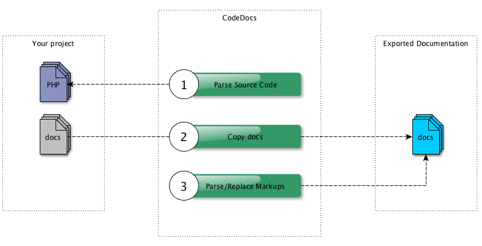

With CodeDocs you can write a technical documentation that is able to access the source code of your project. This means if the source code changes, the documentation is updated automatically!
The documentation consists of plain text files (e.g. Markdown) which are located directly in the project's repository or even in the Doc Comments of your classes. You can use Markups to access the source code or generate documentation segments.
When you execute CodeDocs, the following happens:

Note: If you use Markdown for instance and you want to generate HTML at the end, you can use a Processor in combination with a tool of your choice that converts Markdown to HTML. Because CodeDocs itself does not take care of converting the files to another type
By the way, this documentation was also created by CodeDocs itself.
See Quick Start to start with your first documentation.